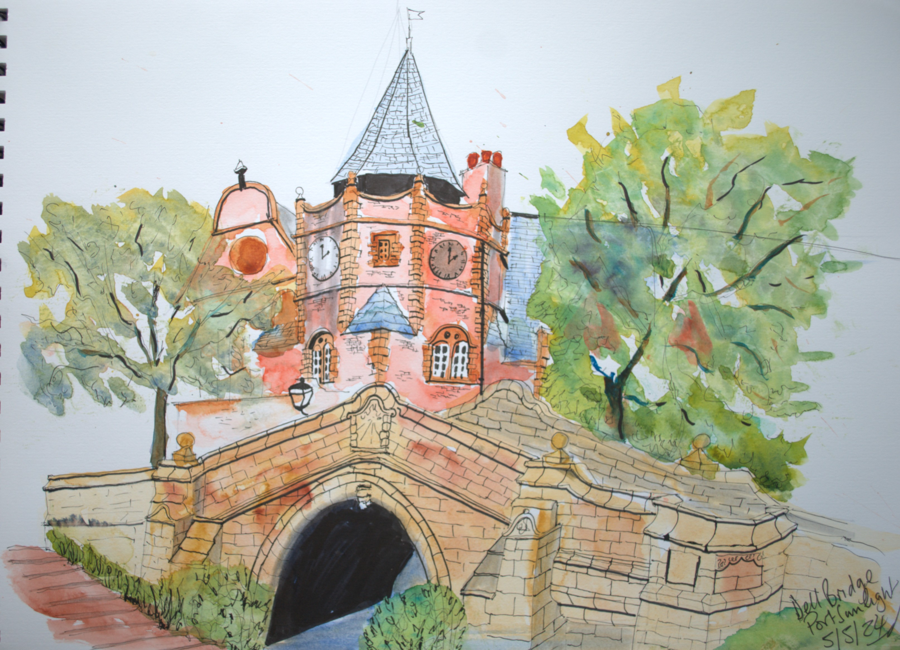

← Back to Urban Sketching
Original urban sketch
Dell Bridge, Port Sunlight
An urban sketch capturing Dell Bridge in Port Sunlight.

Artwork details
A local urban sketch of Dell Bridge in Port Sunlight, capturing the charm, structure and atmosphere of this distinctive village setting.
Status: Available
Price: Price on enquiry
- Medium: Urban sketch
- Subject: Dell Bridge, Port Sunlight
- Artist: Richard Oldfield
About this sketch
Dell Bridge, Port Sunlight reflects Richard’s interest in local architecture, village scenes and places with a strong sense of character.
This piece is suited to anyone who enjoys Port Sunlight, local landmarks, architectural sketching and artwork that captures familiar places.